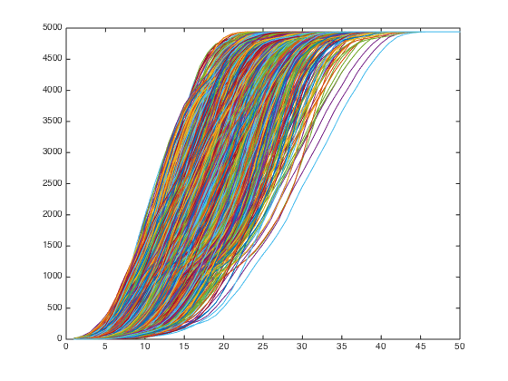

Contents
%%ANALYSE INFLUENCE LAYERS OF REAL WORLD NETWORKS % % 2015 Bijan Ranjbar-Sahraei, Delft Univeristy close all clc
import data
clear all
This network was constructed from the USA's FAA (Federal Aviation Administration) National Flight Data Center (NFDC), Preferred Routes Database. Nodes in this network represent airports or service centers and links are created from strings of preferred routes recommended by the NFDC.
% load out_maayan_faa
This undirected network contains information about the power grid of the Western States of the United States of America. An edge represents a power supply line. A node is either a generator, a transformator or a substation.
load out_power_grid
This undirected network contains information about the power grid of the Western States of the United States of America. An edge represents a power supply line. A node is either a generator, a transformator or a substation. load out_euro_road
turn data into adjacency matrix
n = max(max(data)); % number of nodes W = zeros(n,n); for i = 1 : size(data,1) W(data(i,1),data(i,2)) = 1; end W = W + W';
plotting the size of layers
diam = 50; L = zeros(n,diam); L(:,1) = sum(W>0,2); WP_old = W; for i = 2 : diam WP_old = WP_old * W; % find every ith subordinate of every node WP_old = WP_old > 0; % truncating the wights to 1 L(:,i) = sum(WP_old,1); % end figure plot(L')
get the node size
node_size = []; for i = 1 : n % b = polyfit(1:diam,L(i,:),1); node_size(i) = sum(L(i,:)<n*.9); end figure; plot(slope,'*')
Undefined function or variable 'slope'. Error in extract_layers (line 62) figure; plot(slope,'*')
export for gephi
export_for_gephi('power_grid',W,node_size);